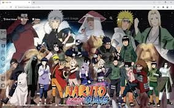

Anime World is a hub for anime enthusiasts and newcomers alike, delving into the captivating world of Japanese animation. We provide a vibrant space for fans to explore diverse genres, unforgettable characters, and thought-provoking narratives. Our blog is dedicated to sharing insightful discussions, reviews, recommendations, and the latest updates from the anime industry. Join us as we celebrate the artistry, storytelling, and cultural impact of anime, connecting fans and fostering a community passionate about this captivating medium.
Anime Insight is your ultimate destination for all things anime. Whether you're a devoted otaku or a curious newcomer, we've got you covered with engaging content, in-depth reviews, and the latest news from the anime world. Our blog is a place where fans gather to immerse themselves in the enchanting universe of Japanese animation and discover new shows to indulge in.
At Anime Insight, we believe that anime is more than just entertainment—it's an art form that connects people across cultures and sparks meaningful conversations. Our team of dedicated writers shares their passion, knowledge, and diverse perspectives to provide you with engaging articles that celebrate the creativity and storytelling prowess of anime.
From exploring the vast realm of classics to uncovering hidden gems, we cover a wide range of genres and offer recommendations tailored to various tastes. Whether you're seeking thrilling action, heartwarming romance, mind-bending mysteries, or thought-provoking dramas, our blog serves as your compass in navigating the vast and ever-expanding anime landscape.
We invite you to join our vibrant community of anime enthusiasts, where you can share your thoughts, engage in discussions, and connect with like-minded individuals who share your love for anime. We value your insights and encourage you to actively participate, making this blog a space for interactive and enriching conversations.
So, whether you're seeking recommendations for your next binge-watch session, eager to dive deep into character analysis, or simply looking to stay updated on the latest releases, Anime Insight is here to accompany you on your anime journey. Get ready to be inspired, entertained, and immersed in the captivating world of anime!
Naruto Shippuden: Ultimate Ninja Storm
– a Japanese animated adventure film directed by Katsuhiro Miyazaki based on the light novel
series by Masashi Sugimoto.

Bleach
- is a Japanese anime television series based on Tite Kubo's original manga series of the same name.
starring Hajime Isayama
as Nagato Yamada's sidekick in this adaptation from the 19 century classic manga series by Toshiyuki Watanabe.
.jpg )